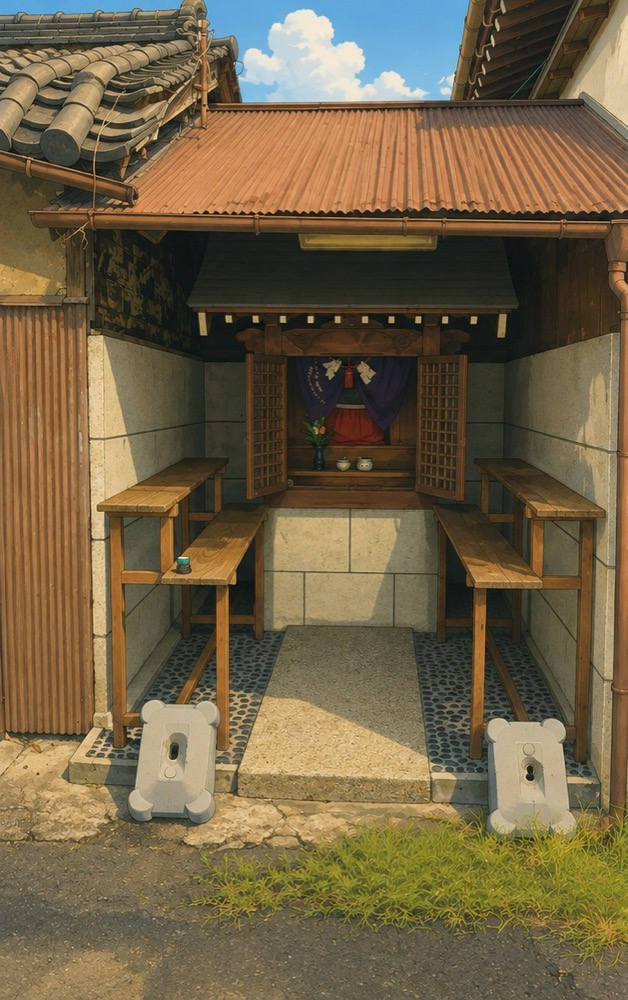
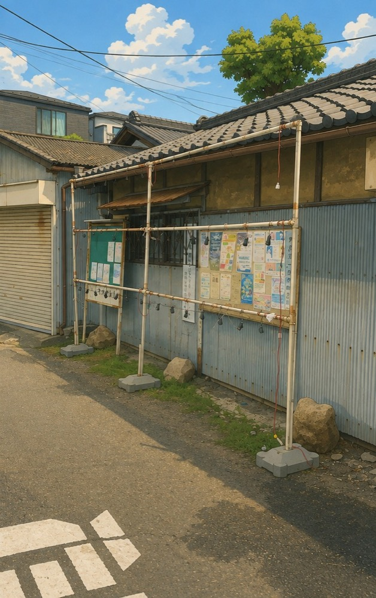

8月23日の地蔵盆に向けて、今日は前準備をしてきました。

地蔵盆の会場となる祠（イラスト加工しています）
現場での引き継ぎを2回ほど聞いていたので、正直「なんとかなるやろ」と思っていました。ところが実際に自分の手を動かしてみると、全然分かりませんでした。
特に苦戦したのが、提灯を飾るためのラックの組み立てです。前任の方からは「これは簡単やから」と聞いていたんですが、いざパイプを目の前にすると、まったく手が動きませんでした。

提灯を飾るラック。組み立て方が分からず苦戦しました
前任の方が残してくれた組み立てのメモらしきものは、なぜか複数ありました。ただ、どれとどれを組み合わせればいいのかが分からず、結局1つ組み立てるだけで精一杯でした。
先日の日記で「引き継ぎ期間を数ヶ月取ってもいいんじゃないか」と書きましたが、今日それを身をもって実感しました。2回聞いただけでは足りませんでした。
当日は、受付時間の1時間半前くらいから飾り付けをする予定です。正直、どうなることやら分かりません。それでも、まずは今日組み立てられた1つを手がかりに、当日また試行錯誤するしかないと思っています。
ほな、また。